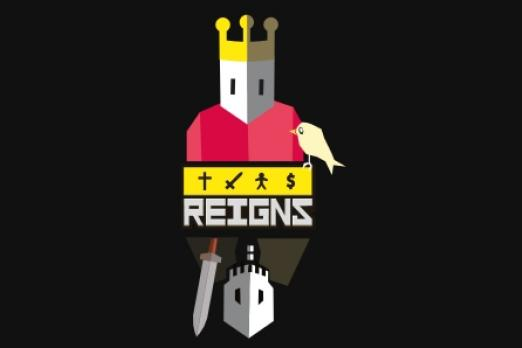
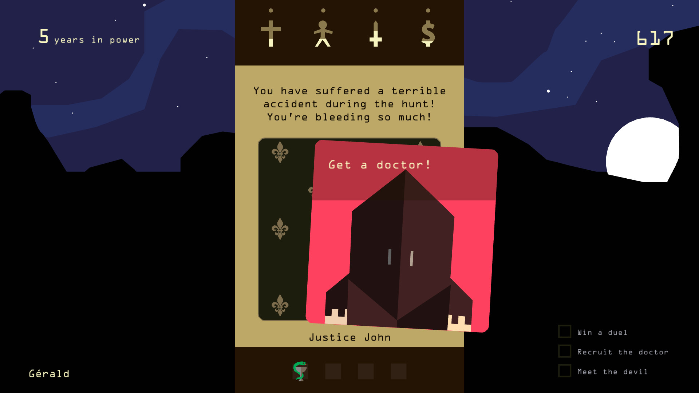
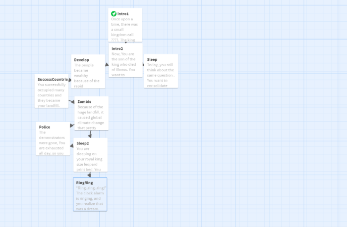

Review The Walking Dead season 1 episode 1-3:
 The story was written in 2012 by the video game company Telltales Games. This story is an
episodic adventure game where the main character’s (the player) actions will determine and
influence the story line. The game is available in many different gaming forms such as PC, Xbox,
and PS4. The context takes place in a zombie apocalypse in Georgia, and the story revolves
around the main character named Lee Everett, a former University professor, who is fighting his
way through the zombie outbreak. The story focuses on character development and the implication
of survival instinct through certain consequences.
In episode 1, Lee luckily escapes from a zombie outbreak on the way to the police station, and
he struggles to look for survivors due to the crowded zombies. He met another main character on
his way named Clemetine. They reached the farm and met other survivors, but due to several
conflicts and deaths, Lee and his groups have to leave the farm to reside at an abandoned hotel.
In episode 2, the story starts to emphasize human survival instinct when Lee faced a group of
cannibals. At first, Lee thought the cannibal group was friendly and caring, and they would help
each other to fight against the zombies, but the cannibals captured Lee’s group member, kill,
and eat them. Lee eventually discovered this fact, and he has to eliminate most of the members
in the dangerous cannibal group.
In episode 3, Lee’s group recruit more people but eventually split up due to internal conflicts.
Many intense human shooting and killing were provided. Lee’s group fled on the train to look for
better resources, but the city he’s trying to reach carry deadly potential risks.
We chose this story, specifically these episodes, because it emphasizes the human life cycles in
the zombie outbreak context, which correlates with our life cycle topic. We really like the
structure of the story. The chart provided helpful advice for us to create our own story later
on. We found out that we can define what would be the important events resulting in branching
out rather branch out for every single event. In addition, we learned that we should only branch
out in 2 ways, and reconnect it after several events to make sure the story stay connected. In
other words, this walking dead chart helps us in organizing and initializing our thinking
process.
The story was written in 2012 by the video game company Telltales Games. This story is an
episodic adventure game where the main character’s (the player) actions will determine and
influence the story line. The game is available in many different gaming forms such as PC, Xbox,
and PS4. The context takes place in a zombie apocalypse in Georgia, and the story revolves
around the main character named Lee Everett, a former University professor, who is fighting his
way through the zombie outbreak. The story focuses on character development and the implication
of survival instinct through certain consequences.
In episode 1, Lee luckily escapes from a zombie outbreak on the way to the police station, and
he struggles to look for survivors due to the crowded zombies. He met another main character on
his way named Clemetine. They reached the farm and met other survivors, but due to several
conflicts and deaths, Lee and his groups have to leave the farm to reside at an abandoned hotel.
In episode 2, the story starts to emphasize human survival instinct when Lee faced a group of
cannibals. At first, Lee thought the cannibal group was friendly and caring, and they would help
each other to fight against the zombies, but the cannibals captured Lee’s group member, kill,
and eat them. Lee eventually discovered this fact, and he has to eliminate most of the members
in the dangerous cannibal group.
In episode 3, Lee’s group recruit more people but eventually split up due to internal conflicts.
Many intense human shooting and killing were provided. Lee’s group fled on the train to look for
better resources, but the city he’s trying to reach carry deadly potential risks.
We chose this story, specifically these episodes, because it emphasizes the human life cycles in
the zombie outbreak context, which correlates with our life cycle topic. We really like the
structure of the story. The chart provided helpful advice for us to create our own story later
on. We found out that we can define what would be the important events resulting in branching
out rather branch out for every single event. In addition, we learned that we should only branch
out in 2 ways, and reconnect it after several events to make sure the story stay connected. In
other words, this walking dead chart helps us in organizing and initializing our thinking
process.
Link to the walking dead story based chart:
----click here for more----
The Young King
Genre: Interactive, Adventure
Characters: Young King (the user)
Setting: Modern Environment, Factories, (Possibly around the year 1800?)

(We got the story inspiration from this game Reigns)
Story Detail
The interactive story begins with the user playing as the “Young King”, who rules a country. The
story takes place somewhere around the year 1800, when the industrial revolution was a huge
thing. The Young King has so much power that the king is able to make people follow the king’s
order such as building massive factories or creating many farm places. Based on the King’s order
(the user’s decision), the user will follow a path that will eventually lead to a good or bad
ending. Each decision will affect how strong the King is, in terms of power. If the King makes
many bad decisions, the King will fail the people and will be kicked out. If the King makes many
good decision for a certain amount of time, the King will receive a good ending.

(there is going to be some sort of player stats like this)
Technical Detail
We want to use Twine(Maybe not Twine) to create a choice-based story game that helps decides
what kind of ending the main character gets depending on the path and decisions that the user
makes. With the coding as a tool for variable, it could help us create a health-like value that
could help measure the effectiveness of the King’s decisions. Our group could also utilize the
coding feature of random values in order to give random events to the King.
Climate Change
Although climate change isn’t the main theme of our
choice-based story, it does play a role in
how long the King can last until it will fail to rule the country. If the King fails to keep the
environment clean through bad choices, the King will eventually fail to rule. Not only will the
King fail to rule, but the user will witness the mess that user created in the story.
Reference
This choice-based story is based off the game “Reigns”, where the King must make decisions in
order to remain in power the longest. The idea is also based off of many different choice-based
games such as The Walking Dead, Corpse Party, and Fallout. Our group might include some factual
information in the game so that the audience learn about cause of climate change, based off the
article.
----click here for more----
PHASE I
Kevin, Huy, Ka Ki, Kray, and Ryan met at library 214 before the class. We combined our story
ideas and the website. Kevin and Huy created our website, but they need more details of the
story on the website. We had discussed that we want to use Twine(Maybe not Twine) to create a
choice-based story game that helps decides what kind of ending the main character gets depending
on the path and decisions that the user makes. With the coding as a tool for variable, it could
help us create a health-like value that could help measure the effectiveness of the King’s
decisions. Our group could also utilize the coding feature of random values in order to give
random events to the King.

PHASE II
Kaki and Kray will work on the story detail. Creating more options for players in our story
Ryan will do more research of climate change and combine with the story.
Kevin and Huy will design the website with more images and put more details on the website after
writing team finished the first draft ideas.
PHASE III
Finally, our team as a whole decided to use the Renpy Software to create our game
“The Evergreen Kingdom” to create multi-layer (sort of like choose your own) decisions for the
story. Above is a desktop sample screenshot of Kaki and Kray’s hard work on the game story and
features some of the story sequences and options that were developed. Ryan’s continued research
of incorporating climate change for the game story came was developed from the content on the
Climate Reality Project websites, which will be list in-game story for interested users to learn
more. He pitched some ideas and concepts to Kaki and Kray. The research on such topics as
illnesses spread by insects in warmer climate temperature, health conditions of
community/laborers affected by industries and hot weather were implemented. Kevin and Huy found
various good images of like castles, knights to match with the theme of the game and to be put
as the background of the game and start to add more content to the various buttons on the games
home page to be implemented in the week after Week 4. The website creation was successful.
PHASE VI
After we have decided to use Renpy as our platform and finalized our story plot, the work
begins:
We first start with brain-storming ideas the general requirements of the game.
Kevin is working on Renpy while Kray is working on story writing.
We finally get the game working and everything things look really good.
Thanks to Renpy, the rendering of the game is awesome. We can use awesome built in features that Renpy provides to create cool visuals and story narration.
The game is finished. You can play the game by clicking "PLAY" at the top left.
----Final Write-Up----
----After your father, Aatrox, passed away, you, Aatrox II, is chosen to govern the kingdom.
Aatrox II is just only 18 years old by that time, but he is very knowledgeable.
He observes that his father has caused climate change, and it indirectly killed his father.
You are now played as the young king character, and 2 directions are provided: Remain your dad’s
policies OR alternate your dad’s policies.
You have 100 LP (Loyalty points), and LP will reflect on your decisions throughout the game----
----Your objective is to govern the kingdom in the wisest way possible. That is, should you follow your father's footsteps? Or should you make decisions that may alternate the fate of your kingdom. Nevertheless, you have to make sure that your kingdom is well-mantained and your people are healthy and happy----

This is a summary of the feedback that we got:
Website:
In general, the feedback was mainly about our information not covered enough and the
text and readability issues on the website. However, we receive a lot of positive feedback about
the aesthetic and the looks of the website.
Resources:
According to other teams give us feedback, our team uses the game "Reign" as their
inspiration for the game and that is stated on their website. Also, we mention a few
choice-based plots that helped them decide on this story.
We are trying to prevent over pollution and will focus should primarily be connected to over
pollution problem. They mention don't see much of climate change included and our team's story
is a creation topic, not a real event. I really like the ideas that talk about doing more
research on the scientific facts of climate change to help build the choices and provide a good
context to them, that could help us a lot of the choices were lacking in this aspect and seemed
very generic.
Other suggestions:
From the feedback of suggestion, there are several kinds of suggestions to
our story and website. First of all, we need to add more connection to climate change with our
story. Second, the website page is too succinct and missing the team and the progress of the
game. Also, some of the feedback talk about the text of the story that makes the player very
confused, so the text can be more details and clarity.
Future Improvement:
For future website improvement, our team could carefully revise and elaborate on the plot and
details to let the user understands more about our story and themes. We could also emphasize the
importance and relevance of climate change to the story. In terms of visuality and readability.
We could change the text font and style to make it stand out and be more readable. In addition,
background change would increase readability as well.
For climate change, we will add more information about climate change that can make
their story more relative to this final project's original topic. And adding data can help the
statement stronger and using more historical data to support our theme. We will provide related
picture resources with the description I think could help those readers can understand the story
clearly, we will include some more topics around the environment and how factories contribute to
global warming or include some choice where it talks about the effects to climate pending on
what the user chooses. For the most important thing, we will add a decision at least that.
focuses on the environmental effects.
For the rest of the time, we will do more research about climate change to make more connection
with our story. Also, we have been finished our update of team progress, and we will put that
into our website as soon as possible. For the text of the story on the website, we will try to
make the text simple and clean to avoid player confusion.